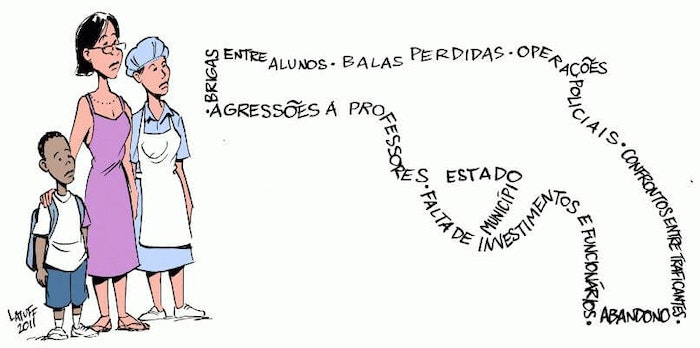
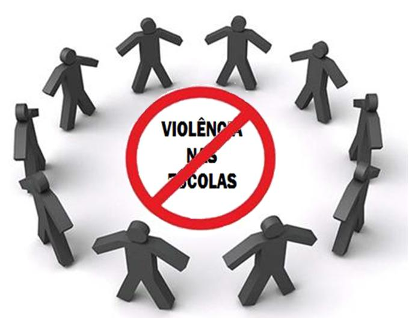

UM BASTA
A violência escolar é um fenômeno preocupante no Brasil, tem-se agregado e assumido diversas formas nas escolas, fazendo-se necessária uma investigação das perspectivas sociais, políticas e psicológicas, para que se possa ampliar a compreensão e fazer-se uso do pensamento crítico sobre essas questões. A escola é vista como um centro de formação intelectual, de desenvolvimento e aprendizagem, um espaço constituído por segurança e proteção. Entretanto, atualmente, situações de violência e desrespeito nas instituições ganham cada vez mais destaque nas mídias e pesquisas, como dito por Debarbieux (2001), o enfoque da mídia no assunto contribuiu para que os acontecimentos tivessem mais visibilidade. As agressões nem sempre são físicas, casos de violência psicológica são bem mais comuns e menosprezados, pois constantemente são julgados como brincadeira.
